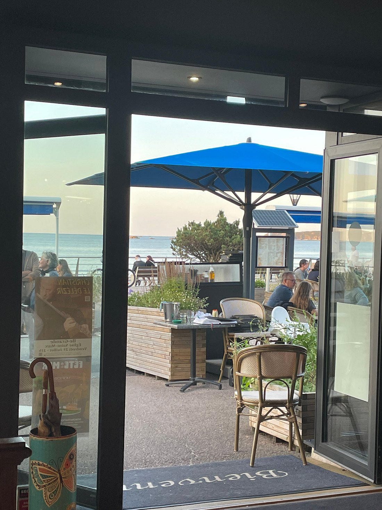

{{ t.intro_k }}
{{ t.intro_t }}
{{ t.intro_p1 }}
{{ t.intro_p2 }}


{{ t.tables_k }}
{{ t.tables_t }}
{{ t.sig_k }}
{{ t.sig_t }}
{{ t.sig_p }}
{{ t.hours_k }}
{{ t.hours_t }}
{{ t.h_break_t }}{{ t.h_break_v }}
{{ t.h_lunch_t }}{{ t.h_lunch_v }}
{{ t.h_dinner_t }}{{ t.h_dinner_v }}
{{ t.hours_note }}
{{ t.band_cta }}
{{ t.insta_k }}
{{ t.insta_t }}
{{ t.insta_p }}
{{ t.carte_p }}
{{ t.formule }}
{{ t.carte_note }}
{{ sec.title }}
{{ sec.note }}{{ it.name }}{{ it.star }}
{{ it.desc }}
{{ t.carte_disclaimer }}
{{ t.carte_cta_t }}
{{ t.band_cta }}
{{ t.resto_lead }}
{{ t.resto_p1 }}
{{ t.resto_p2 }}

{{ t.resto_p3 }}
{{ t.values_title }}
{{ v.n }}
{{ v.title }}
{{ v.text }}
{{ t.gal_k }}
{{ t.gal_t }}
{{ t.gal_p }}
{{ t.contact_k }}
{{ t.contact_t }}
{{ t.contact_lead }}
{{ t.hours_title2 }}
{{ t.h_break_t }}{{ t.h_break_v }}
{{ t.h_lunch_t }}{{ t.h_lunch_v }}
{{ t.h_dinner_t }}{{ t.h_dinner_v }}
{{ t.services_title }}
{{ t.nearby_title }}
{{ t.nearby_text }}